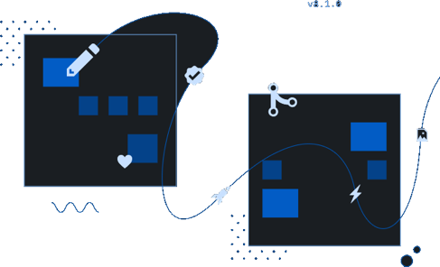
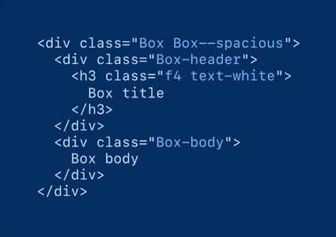

GitHub
Pulse.IO
Our design system helps us work together to build a great experience for all of our ADL users.
Pulse.IO
Components
ALPHA
We’re building a WebComponent library for Pulse.IO
See how it works
Construction based on
Atomic Design
Styles can be mixed and matched to achieve different
layouts, independent of their location.
View Style-guide
Download library


Better experience
in design - development
Styles can be mixed and matched to achieve different
layouts, independent of their location.
View documentation
Install package